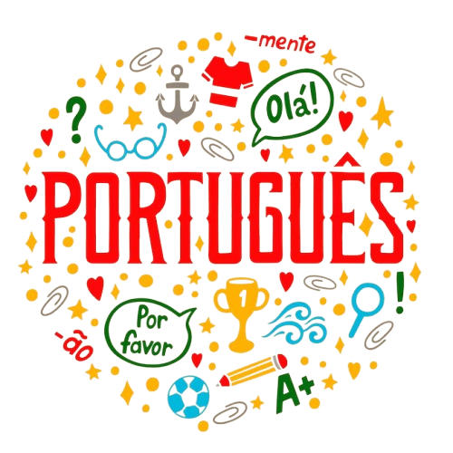

|  |
A língua portuguesa é uma das mais faladas no mundo, sendo o idioma oficial de diversos países, incluindo Portugal, Brasil, Angola, Moçambique, entre outros. É uma língua românica derivada do latim, que ao longo dos séculos incorporou influências de diversas culturas e povos.
Sua estrutura gramatical é complexa, com uma variedade de regras de sintaxe, conjugação verbal e uso de pontuação. No entanto, é essa riqueza que permite uma expressão versátil e eloquente, capaz de transmitir nuances de significado e emoção.
A língua portuguesa possui uma vasta literatura, que abrange desde os clássicos da literatura portuguesa, como Camões e Fernando Pessoa, até os renomados autores da literatura brasileira, como Machado de Assis e Clarice Lispector. Essa diversidade literária reflete não apenas a evolução da língua ao longo do tempo, mas também as diferentes culturas e contextos sociais em que é falada.
Além disso, a língua portuguesa está em constante evolução, incorporando novos termos e expressões à medida que a sociedade se transforma. Com o advento da internet e das redes sociais, novas formas de comunicação e linguagem surgiram, enriquecendo ainda mais o idioma e ampliando suas possibilidades de uso.
Em resumo, a língua portuguesa é muito mais do que um meio de comunicação; é uma parte fundamental da identidade cultural dos países lusófonos, uma ferramenta para a expressão criativa e uma ponte que conecta pessoas e culturas em todo o mundo.
|